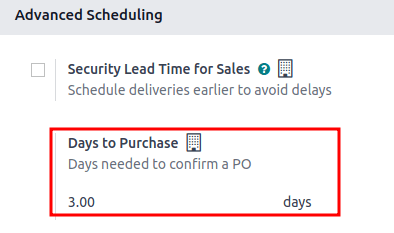
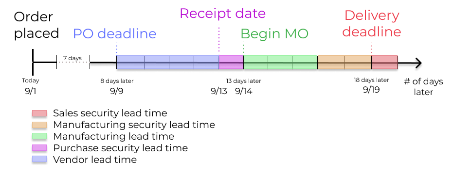

ระยะเวลาดำเนินการ¶
การคาดการณ์วันที่ส่งมอบสินค้าอย่างแม่นยำถือเป็นสิ่งสำคัญในการตอบสนองความคาดหวังของลูกค้า ใน Odoo แอป สินค้าคงคลัง ช่วยให้กำหนดค่าระยะเวลาดำเนินการได้อย่างครอบคลุม ช่วยให้ประสานงานและวางแผนการสั่งผลิต การจัดส่ง และการรับสินค้าได้
ประเภทระยะเวลารอคอยสินค้า¶
ระยะเวลาดำเนินการที่แตกต่างกันสำหรับการดำเนินการที่แตกต่างกันอาจส่งผลกระทบต่อขั้นตอนต่างๆ ของกระบวนการปฏิบัติตามคำสั่งซื้อ นี่คือสรุประยะเวลาดำเนินการใน Odoo แต่ละประเภท:

ระยะเวลาในการจัดส่งให้ลูกค้า: กรอบเวลาเริ่มต้นสำหรับการปฏิบัติตามคำสั่งซื้อของลูกค้า ระยะเวลารอคอยสินค้าของลูกค้าคือจำนวนวันตั้งแต่วันที่ได้รับการยืนยันคำสั่งซื้อ (SO) จนถึงวันที่สินค้าถูกจัดส่งออกจากคลังสินค้า ซึ่งเรียกอีกอย่างว่า ระยะเวลาดำเนินการจัดส่ง
ระยะเวลาดำเนินการเพื่อความปลอดภัยในการขาย: เลื่อน วันที่จัดส่งตามกำหนด ไปข้างหน้าตามจำนวนวันที่ระบุ ซึ่งจะช่วยเป็นบัฟเฟอร์เพื่อให้มีเวลาเพียงพอในการเตรียมการจัดส่งขาออกได้เร็วขึ้น โดยคำนึงถึงความเป็นไปได้ที่อาจเกิดความล่าช้าในกระบวนการจัดส่ง
ระยะเวลาดำเนินการสั่งซื้อ: จำนวนวันนับจากการยืนยันใบสั่งซื้อ (PO) จนถึงวันที่ได้รับสินค้า โดยจะให้ข้อมูลเชิงลึกเกี่ยวกับระยะเวลาที่สินค้าจะมาถึงคลังสินค้า ช่วยให้กำหนดตารางเวลาและวางแผนการจัดส่งไปยังซัพพลายเออร์ได้อย่างมีประสิทธิภาพ
ระยะเวลาดำเนินการเพื่อความปลอดภัยในการซื้อ: เลื่อนกำหนดเวลาในการสั่งซื้อใน PO ออกไปเป็นจำนวนวันที่กำหนด แนวทางเชิงรุกในการสั่งซื้อล่วงหน้านี้จะช่วยลดความเสี่ยงของความล่าช้าของผู้ขายหรือการจัดส่ง ดังนั้น สำหรับผลิตภัณฑ์ที่กำหนดให้เติมสินค้าตามคำสั่งซื้อ ความต้องการจะปรากฏใน รายงานการเติมสินค้า เร็วขึ้นตามจำนวนวันที่กำหนด
วันในการซื้อ: จำนวนวันที่ผู้ขายต้องใช้ในการรับคำขอใบเสนอราคา (RFQ) และยืนยันคำขอ โดยจะเลื่อนกำหนดเวลาในการกำหนดเวลา RFQ ออกไปตามจำนวนวันที่กำหนด
ระยะเวลาดำเนินการผลิต: จำนวนวันที่ต้องใช้ในการดำเนินการตามคำสั่งซื้อการผลิต (MO) ตั้งแต่วันที่ได้รับการยืนยัน ระยะเวลาดำเนินการนี้รวมวันหยุดสุดสัปดาห์ (ชั่วโมงนอกเวลาทำการใน Odoo) และใช้เพื่อคาดการณ์วันที่ผลิตโดยประมาณสำหรับสินค้าสำเร็จรูป
จำนวนวันในการเตรียมใบสั่งผลิต: จำนวนวันที่ต้องใช้ในการเติมส่วนประกอบใหม่หรือผลิตชิ้นส่วนย่อยของผลิตภัณฑ์ ตั้งค่าโดยตรงในรายการวัสดุ (BoM) หรือคลิก คำนวณ เพื่อสรุประยะเวลาสั่งซื้อและระยะเวลาการผลิตของส่วนประกอบใน BoM
ระยะเวลาดำเนินการตามข้อกำหนดด้านความปลอดภัยในการผลิต: เลื่อนวันที่กำหนดของ MO ไปข้างหน้าตามจำนวนวันที่ระบุ เมื่อใช้ร่วมกับ เติมสินค้าตามคำสั่งซื้อ ระยะเวลาดำเนินการตามข้อกำหนดด้านความปลอดภัยจะทำให้ความต้องการแสดงเร็วขึ้นในรายงานการเติมสินค้า
ระยะเวลาในการขาย¶
สามารถกำหนดค่าระยะเวลาในการจัดส่งให้ลูกค้าและระยะเวลาดำเนินการเพื่อความปลอดภัยในการขายให้คำนวณ วันที่คาดว่าจะจัดส่ง บน SO โดยอัตโนมัติได้ วันที่คาดว่าจะจัดส่งช่วยให้สามารถตั้งค่า วันที่จัดส่ง ได้อย่างสมจริงสำหรับการจัดส่งจากคลังสินค้า
Odoo จะออกข้อความเตือนหากวันจัดส่งที่กำหนดนั้นเร็วกว่าวันที่คาดไว้ เนื่องจากอาจไม่สามารถดำเนินการตามคำสั่งซื้อได้ทันเวลา และอาจส่งผลกระทบต่อการดำเนินการคลังสินค้าอื่นๆ
Example
SO ที่มี เทียนกลิ่นมะพร้าว ได้รับการยืนยันในวันที่ 11 กรกฎาคม ผลิตภัณฑ์มีระยะเวลาในการจัดส่งให้ลูกค้า 14 วัน และธุรกิจใช้ระยะเวลาดำเนินการเพื่อความปลอดภัยในการขาย 1 วัน ตามข้อมูลระยะเวลานำส่ง Odoo แนะนำวันที่จัดส่งภายใน 15 วัน คือวันที่ 26 กรกฎาคม

ส่วนต่อไปนี้สาธิตวิธีการคำนวณวันที่ส่งมอบโดยประมาณโดยอัตโนมัติ
ระยะเวลาในการจัดส่งให้ลูกค้า¶
กำหนดระยะเวลาในการจัดส่งให้ลูกค้าในแต่ละแบบฟอร์มผลิตภัณฑ์โดยไปที่หน้าผลิตภัณฑ์ โดยไปที่ จากนั้นเลือกผลิตภัณฑ์ที่ต้องการ แล้วสลับไปที่แท็บ สินค้าคงคลัง จากนั้น ภายใต้ฟิลด์ ระยะเวลาในการจัดส่งให้ลูกค้า ให้กรอกจำนวนวันตามปฏิทินที่จำเป็นในการปฏิบัติตามคำสั่งซื้อการจัดส่งตั้งแต่ต้นจนจบ
Example
กำหนดระยะเวลาในการจัดส่งให้ลูกค้า 14 วันสำหรับเทียนหอมกลิ่นมะพร้าวโดยไปที่แบบฟอร์มผลิตภัณฑ์ จากนั้นในแท็บ สินค้าคงคลัง ให้พิมพ์ 14.00 วันลงในช่อง ระยะเวลาในการจัดส่งให้ลูกค้า

ระยะเวลาดำเนินการเพื่อความปลอดภัยในการขาย¶
ระยะเวลาดำเนินการเพื่อความปลอดภัยในการขาย ถูกกำหนดไว้สำหรับธุรกิจใน
ในหน้าการกำหนดค่า ภายใต้หัวข้อ การกำหนดตารางงานขั้นสูง ให้ค้นหากล่องสำหรับ ระยะเวลาดำเนินการด้านความปลอดภัยในการขาย แล้วคลิกช่องทำเครื่องหมายเพื่อเปิดใช้งานฟีเจอร์ดังกล่าว
ขั้นตอนต่อไป ให้ป้อนจำนวนวันตามปฏิทินที่ต้องการ ระยะเวลาดำเนินการเพื่อความปลอดภัยนี้ถือเป็นตัวกันชนที่แจ้งให้ทีมเตรียมการจัดส่งขาออกก่อนวันกำหนด
Example
การตั้งค่า ระยะเวลาดำเนินการด้านความปลอดภัยในการขาย เป็น 1.00 วัน จะทำให้ วันที่กำหนด ของใบสั่งซื้อ (DO) เลื่อนไปข้างหน้าหนึ่งวัน ในกรณีนั้น หากกำหนดการจัดส่งผลิตภัณฑ์ไว้ล่วงหน้าในวันที่ 6 เมษายน แต่มีการกำหนดระยะเวลาการจัดส่งไว้ล่วงหน้าหนึ่งวัน วันกำหนดการจัดส่งใหม่สำหรับใบสั่งซื้อจะเป็นวันที่ 5 เมษายน

ส่งมอบผลิตภัณฑ์หลายชนิด¶
สำหรับใบสั่งซื้อที่มีผลิตภัณฑ์หลายรายการที่มีระยะเวลาดำเนินการต่างกัน สามารถกำหนดค่าระยะเวลาดำเนินการได้โดยตรงจากใบเสนอราคา ในใบเสนอราคา ให้คลิกแท็บ ข้อมูลอื่นๆ แล้วตั้งค่า นโยบายการจัดส่ง เป็น:
โดยเร็วที่สุด เพื่อส่งมอบผลิตภัณฑ์โดยเร็วที่สุดเมื่อพร้อม วันที่กำหนด ของ DO จะถูกกำหนดโดยการเพิ่มวันที่ปัจจุบันลงในระยะเวลาเตรียมการที่สั้นที่สุดในบรรดาผลิตภัณฑ์ในใบสั่งซื้อ
เมื่อสินค้าทั้งหมดพร้อมแล้ว ให้รอดำเนินการตามคำสั่งซื้อทั้งหมดในครั้งเดียว วันที่กำหนด ของ DO จะถูกกำหนดโดยการนำวันที่ปัจจุบันไปเพิ่มในระยะเวลาเตรียมการที่นานที่สุดในบรรดาผลิตภัณฑ์ในคำสั่งซื้อ
Example
ในใบเสนอราคาที่มีผลิตภัณฑ์ 2 ชิ้น คือ เสื่อโยคะ และ แถบยางยืด ผลิตภัณฑ์มีระยะเวลารอคอย 8 วันและ 5 วันตามลำดับ วันนี้คือวันที่ 2 เมษายน
เมื่อกำหนด นโยบายการจัดส่ง เป็น โดยเร็วที่สุด วันจัดส่งตามกำหนดจะเป็น 5 วันจากวันนี้: 7 เมษายน ในทางกลับกัน หากเลือก เมื่อสินค้าทั้งหมดพร้อมแล้ว จะกำหนดวันจัดส่งตามกำหนดเป็น 8 วันจากวันนี้: 10 เมษายน
ระยะเวลาในการจัดซื้อ¶
การกำหนดวันที่ในการสั่งซื้อจากซัพพลายเออร์โดยอัตโนมัติสามารถช่วยให้กระบวนการจัดซื้อง่ายขึ้นได้
Odoo คำนวณวันส่งสินค้าของซัพพลายเออร์ วันที่รับสินค้า และกำหนดเวลา PO โดยอิงจากวันที่กำหนดว่าสินค้าจะต้องอยู่ในคลังสินค้าหรือไม่ โดยการทำงานย้อนกลับจากวันที่รับสินค้า จะนำระยะเวลาจัดส่งของผู้ขายและระยะเวลาดำเนินการเพื่อความปลอดภัยในการซื้อเข้ามาพิจารณา เพื่อกำหนดกำหนดเวลา PO
กำหนดเวลานี้คือวันที่ควรยืนยันคำสั่งซื้อ เพื่อให้มั่นใจว่าจะมาถึงทันเวลาภายในวันที่คาดว่าจะได้รับ

ระยะเวลาจัดส่งของผู้ขาย¶
หากต้องการกำหนดระยะเวลาจัดส่งของผู้ขายสำหรับคำสั่งซื้อที่มาถึงคลังสินค้าจากที่ตั้งของผู้ขาย ให้เริ่มด้วยการนำทางไปที่แบบฟอร์มผลิตภัณฑ์ผ่านทาง
ขั้นตอนต่อไป เลือกผลิตภัณฑ์ที่ต้องการ แล้วสลับไปที่แท็บ การจัดซื้อ ในรายการราคาผู้ขายที่แก้ไขได้ ให้คลิกปุ่ม เพิ่มบรรทัด เพื่อเพิ่มรายละเอียดผู้ขาย เช่น ชื่อ ผู้ขาย ราคา ที่เสนอสำหรับผลิตภัณฑ์ และสุดท้ายคือ ระยะเวลาในการจัดส่ง
Note
สามารถเพิ่มผู้จำหน่ายและระยะเวลาดำเนินการหลายรายการลงในรายการราคาของผู้ขายได้ ผู้ขายและระยะเวลาดำเนินการเริ่มต้นที่เลือกจะเป็นรายการที่ด้านบนของรายการ
Example
ในรายการราคาผู้ขายของแบบฟอร์มผลิตภัณฑ์ ระยะเวลาในการจัดส่ง สำหรับผู้ขายที่เลือกไว้จะถูกตั้งเป็น 10 วัน

กำหนดระยะเวลาจัดส่งของผู้ขายของผู้ขายจะทำให้วันที่คาดว่าจะมาถึงของสินค้าถูกกำหนดโดยอัตโนมัติโดยใช้วันที่ยืนยัน :abbr: PO (ใบสั่งซื้อ) บวกกับระยะเวลาจัดส่งของผู้ขาย วิธีนี้ช่วยให้พนักงานคลังสินค้าได้รับแจ้งหากสินค้า ไม่มาถึง ภายในกรอบเวลาที่คาดไว้
Example
เมื่อได้รับการยืนยัน PO เมื่อวันที่ 11 กรกฎาคม สำหรับผลิตภัณฑ์ที่มีระยะเวลาจัดส่งของผู้ขาย 10 วัน Odoo จะตั้ง วันที่รับสินค้า เป็นวันที่ 21 กรกฎาคมโดยอัตโนมัติ วันที่รับสินค้ายังปรากฏเป็น วันที่กำหนด บนแบบฟอร์มใบเสร็จรับเงินจากคลังสินค้า ซึ่งเข้าถึงได้จากปุ่ม ใบรับสินค้า อัจฉริยะที่อยู่บน PO (ใบสั่งซื้อ)


ระยะเวลาดำเนินการเพื่อความปลอดภัยในการซื้อ¶
ระยะเวลาดำเนินการเพื่อความปลอดภัยในการซื้อ ถูกกำหนดไว้สำหรับธุรกิจใน
ในหน้า ตั้งค่า ภายใต้หัวข้อ การกำหนดตารางงานขั้นสูง ให้ทำเครื่องหมายที่ช่องกาเครื่องหมาย ระยะเวลาดำเนินการเพื่อความปลอดภัยในการซื้อ
ขั้นตอนต่อไป ให้ป้อนจำนวนวันตามปฏิทินที่ต้องการ เมื่อกำหนดค่าระยะเวลาดำเนินการล่วงหน้าเพื่อความปลอดภัยแล้ว บัฟเฟอร์จะถูกตั้งค่าเพื่อรองรับความล่าช้าที่อาจเกิดขึ้นในการจัดส่งของซัพพลายเออร์ จากนั้นคลิก บันทึก
Example
การตั้งค่า ระยะเวลาดำเนินการเพื่อความปลอดภัยในการซื้อ เป็น 2.00 วัน จะทำให้ วันที่กำหนด ของการรับสินค้าเลื่อนออกไปสองวัน ในกรณีนั้น หากสินค้ามีกำหนดส่งมาถึงในวันที่ 6 เมษายน โดยมีระยะเวลารอคอยเพื่อความปลอดภัยสองวัน วันที่กำหนดไว้ใหม่สำหรับการรับสินค้าจะเป็นวันที่ 8 เมษายน
วันในการซื้อ¶
หากต้องการกำหนดระยะเวลาดำเนินการ วันในการซื้อ ให้ไปที่ ภายใต้ส่วน การกำหนดตารางงานขั้นสูง ในฟิลด์ วันในการซื้อ ให้ระบุจำนวนวันที่ผู้ขายต้องใช้ในการยืนยัน RFQ หลังจากได้รับจากบริษัท
ระยะเวลาดำเนินการผลิต¶
ระยะเวลาดำเนินการสามารถช่วยลดความซับซ้อนของกระบวนการจัดซื้อวัสดุสิ้นเปลืองและส่วนประกอบที่ใช้ในผลิตภัณฑ์ที่ผลิตขึ้นที่มีรายการวัสดุ (BoM)
กำหนดเวลา MO ซึ่งเป็นกำหนดเวลาในการเริ่มต้นกระบวนการผลิตเพื่อให้ผลิตภัณฑ์เสร็จสมบูรณ์ภายในวันที่จัดส่งตามกำหนด สามารถกำหนดได้โดยการกำหนดค่าระยะเวลารอคอยในการผลิตและเวลารอคอยด้านความปลอดภัยในการผลิต

ระยะเวลาดำเนินการผลิต¶
ระยะเวลาดำเนินการผลิตของผลิตภัณฑ์จะถูกกำหนดค่าจากแบบฟอร์มรายการวัสดุ (BoM) ของผลิตภัณฑ์
หากต้องการเพิ่มระยะเวลาดำเนินการใน BoM ให้ไปที่ และเลือก BoM ที่ต้องการแก้ไข
ในแบบฟอร์ม BoM ให้คลิกแท็บ เบ็ดเตล็ด เปลี่ยนค่า (เป็นวัน) ในฟิลด์ ระยะเวลาดำเนินการผลิต เพื่อระบุจำนวนวันตามปฏิทินที่จำเป็นในการผลิตของผลิตภัณฑ์

Note
หาก BoM ที่เลือกเป็น BoM หลายระดับ ระยะเวลาดำเนินการผลิตของส่วนประกอบจะถูกเพิ่มเข้าไป
หากมีการจ้างเหมาช่วงผลิตภัณฑ์ BoM สามารถใช้ ระยะเวลาดำเนินการผลิต เพื่อกำหนดวันที่ควรจะส่งส่วนประกอบให้กับผู้รับเหมาช่วงได้
กำหนดเวลา MO โดยอิงตาม วันที่คาดว่าจะส่งมอบ ที่ระบุไว้ในฟิลด์ วันที่กำหนด ของ DO
กำหนดเวลา MO ซึ่งคือฟิลด์ วันที่กำหนด ใน MO จะถูกคำนวณโดยใช้ วันที่จัดส่งที่คาดไว้ ลบด้วยระยะเวลาดำเนินการผลิต
ซึ่งช่วยให้มั่นใจว่ากระบวนการผลิตจะเริ่มต้นตรงเวลาเพื่อให้ตรงตามวันที่จัดส่ง
อย่างไรก็ตาม สิ่งสำคัญคือต้องทราบว่าระยะเวลาดำเนินการนั้นขึ้นอยู่กับวันตามปฏิทิน ระยะเวลาดำเนินการนั้นไม่นับรวมวันหยุดสุดสัปดาห์ วันหยุดนักขัตฤกษ์ หรือ ความจุของศูนย์ปฏิบัติงาน (จำนวนการดำเนินการที่สามารถดำเนินการพร้อมกันได้ที่ศูนย์ปฏิบัติงาน)
Example
วันที่จัดส่งผลิตภัณฑ์ตามกำหนดการใน DO คือวันที่ 15 สิงหาคม ผลิตภัณฑ์ดังกล่าวต้องใช้เวลา 14 วันในการผลิต ดังนั้น วันที่ล่าสุดที่จะเริ่ม MO เพื่อให้ตรงตามวันที่กำหนดคือวันที่ 1 สิงหาคม
วันในการจัดเตรียมใบสั่งผลิต¶
กำหนดจำนวนวันที่จำเป็นในการรวบรวมส่วนประกอบเพื่อผลิตสินค้าโดยไปที่ BoM ในการดำเนินการดังกล่าว ให้ไปที่ และเลือก BoM ที่ต้องการ
ในแท็บ เบ็ดเตล็ด ของ BoM ให้ระบุวันตามปฏิทินที่จำเป็นในการรับส่วนประกอบของผลิตภัณฑ์ในฟิลด์ วันในการจัดเตรียมใบสั่งผลิต การทำเช่นนี้จะสร้าง MOs ไว้ล่วงหน้า และช่วยให้มั่นใจได้ว่ามีเวลาเพียงพอสำหรับการเติมส่วนประกอบหรือผลิตผลิตภัณฑ์กึ่งสำเร็จรูป
Tip
การคลิก คำนวณ ที่อยู่ถัดจากฟิลด์ จำนวนวันในการเตรียมใบสั่งผลิต จะคำนวณระยะเวลาเตรียมการที่นานที่สุดในบรรดาส่วนประกอบทั้งหมดที่ระบุไว้ใน BoM
ระยะเวลาดำเนินการเพื่อความปลอดภัยในการซื้อ ที่มีผลกระทบต่อ BoM เฉพาะนี้จะถูกเพิ่มเข้าไปในมูลค่านี้ด้วย
Example
BoM ประกอบด้วยสองส่วน ส่วนหนึ่งมีระยะเวลาเตรียมการผลิต 2 วัน และอีกส่วนหนึ่งมีระยะเวลาเตรียมการซื้อ 4 วัน จำนวนวันในการเตรียมใบสั่งผลิต คือ 4 วัน
ระยะเวลาดำเนินการผลิตที่ปลอดภัย¶
ระยะเวลาดำเนินการผลิตที่ปลอดภัย ถูกกำหนดไว้สำหรับธุรกิจใน ภายใต้หัวข้อ การวางแผน ให้ทำเครื่องหมายที่ช่องกาเครื่องหมาย ระยะเวลาดำเนินการที่ปลอดภัย
ขั้นตอนต่อไป ให้ป้อนจำนวนวันตามปฏิทินที่ต้องการ เมื่อกำหนดค่าระยะเวลาดำเนินการที่ปลอดภัยแล้ว บัฟเฟอร์จะถูกตั้งค่าเพื่อรองรับความล่าช้าที่อาจเกิดขึ้นในกระบวนการผลิต จากนั้นคลิก บันทึก

Example
สินค้ามีกำหนดวันจัดส่งตามกำหนดบน DO ที่กำหนดไว้ในวันที่ 15 สิงหาคม ระยะเวลาดำเนินการผลิตคือ 7 วัน และระยะเวลาดำเนินการผลิตที่ปลอดภัยคือ 3 วัน ดังนั้น วันที่กำหนดบน :abbr:`MO (ใบสั่งผลิต) จึงสะท้อนถึงวันที่ล่าสุดในการเริ่มใบสั่งผลิต ในตัวอย่างนี้ วันที่วางแผนบน MO คือวันที่ 5 สิงหาคม
ตัวอย่างทั่วโลก¶
ดูตัวอย่างต่อไปนี้เพื่อทำความเข้าใจว่าระยะเวลาดำเนินการทั้งหมดทำงานร่วมกันอย่างไรเพื่อให้แน่ใจว่าจะปฏิบัติตามคำสั่งซื้อได้ตรงเวลา:
ระยะเวลาดำเนินการเพื่อความปลอดภัยในการขาย: 1 วัน
ระยะเวลาดำเนินการผลิตที่ปลอดภัย: 2 วัน
ระยะเวลาดำเนินการผลิต: 3 วัน
ระยะเวลาดำเนินการเพื่อความปลอดภัยในการซื้อ: 1 วัน
ระยะเวลาจัดส่งของผู้ขาย: 4 วัน
ลูกค้าสั่งซื้อสินค้าที่ผลิตแล้วในวันที่ 1 กันยายน และวันที่กำหนดส่งมอบสินค้าจากคลังสินค้าคือวันที่ 20 กันยายน Odoo ใช้เวลาดำเนินการและกฎการสั่งซื้อซ้ำอัตโนมัติเพื่อกำหนดตารางการดำเนินการที่จำเป็นโดยอิงตามวันที่ส่งมอบสินค้าขาออก คือวันที่ 20 กันยายน:
September 1st: Sales order created, confirmed by salesperson.
วันที่ 9 กันยายน: กำหนดเวลาในการสั่งซื้อส่วนประกอบเพื่อให้แน่ใจว่าจะมาถึงทันเวลาที่เริ่มต้นการผลิต (ระยะเวลาจัดส่งของซัพพลายเออร์ 4 วัน)
วันที่ 13 กันยายน: กำหนดวันรับชิ้นส่วน ในตอนแรกกำหนดไว้ที่ 14 กันยายน แต่เนื่องจากกำหนดระยะเวลาสั่งซื้อล่วงหน้า 1 วัน จึงทำให้ต้องเลื่อนวันเร็วขึ้น 1 วัน
วันที่ 14 กันยายน: กำหนดเวลาในการเริ่มการผลิต คำนวณโดยหักระยะเวลาดำเนินการผลิต 3 วัน และระยะเวลาดำเนินการผลิตที่ปลอดภัย 2 วัน ออกจากวันที่คาดว่าจะจัดส่งคือวันที่ 19 กันยายน
วันที่ 19 กันยายน: วันที่กำหนด ในใบสั่งซื้อระบุวันที่คาดว่าจะจัดส่งที่อัปเดต ซึ่งเดิมกำหนดไว้เป็นวันที่ 20 กันยายน แต่ระยะเวลาดำเนินการเพื่อความปลอดภัยในการขายได้เลื่อนวันเร็วขึ้นหนึ่งวัน
Odoo's replenishment planning maps a business' order fulfillment process, setting pre-determined deadlines and raw material order dates, including buffer days for potential delays. This ensures products are delivered on time.